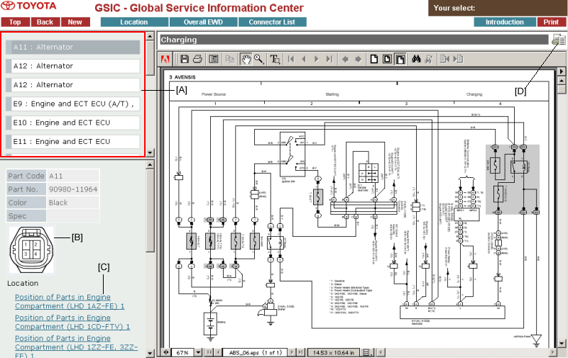
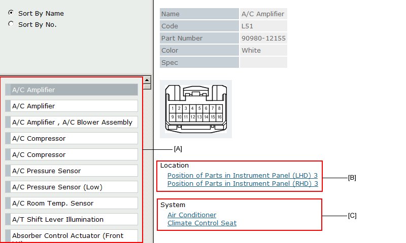

Top area of the screen is reserved for the menu selection for this web-based "EWD system."
Click one of the sections on the menu to access the data you want.
The first screen of this EWD system shows you the top menu of the Overall EWD section.
| Sections | Title | Contents |
|---|---|---|
| Location |
Indicate where an ECU, relay, relay block and others are located. Indicate where a connector, ground point and others are located. |
|
| Overall EWD | Category | Show you the overall wiring diagrams of a vehicle. The contents are shown according to the category. |
| Location | Show you the overall wiring diagrams of a vehicle. The contents are shown in order of the location. | |
| Connector List | Provide the name list of all the connectors. The list allows you to view a part number, shape and some other data you want. | |
| Introduction | Introduction, Abbreviations, and Help on this EWD system are included. |
Select a proper item from the view list [A].

The name list of the parts will be displayed in the upper left of the screen if the diagram of System Circuit and Wire Routing includes symbols of the connectors.
Part code is shown on the left of the part name.
By choosing a part from the name list in [A], connector detailed data will be displayed here.
In System Circuit, the link let you go to the section where indicates a location of the connector shown above this link.
In Wire Routing, the link is cross-linked with System Circuit that indicates the wire connection of the connector shown in this frame.
By clicking this button, a system currently shown or a wiring routing will be displayed in the printable format (PDF).
This can be printed out using the "print" button in Acrobat Reader (external module).

The Parts Name will be listed here.
You can view the details like the figure, code, part number and color of the connector you selected from the name list.
Clicking this link you can access the wiring diagram that refers to the connector you have chosen.
Clicking this link you can access the system circuit that refers to the connector you have chosen.